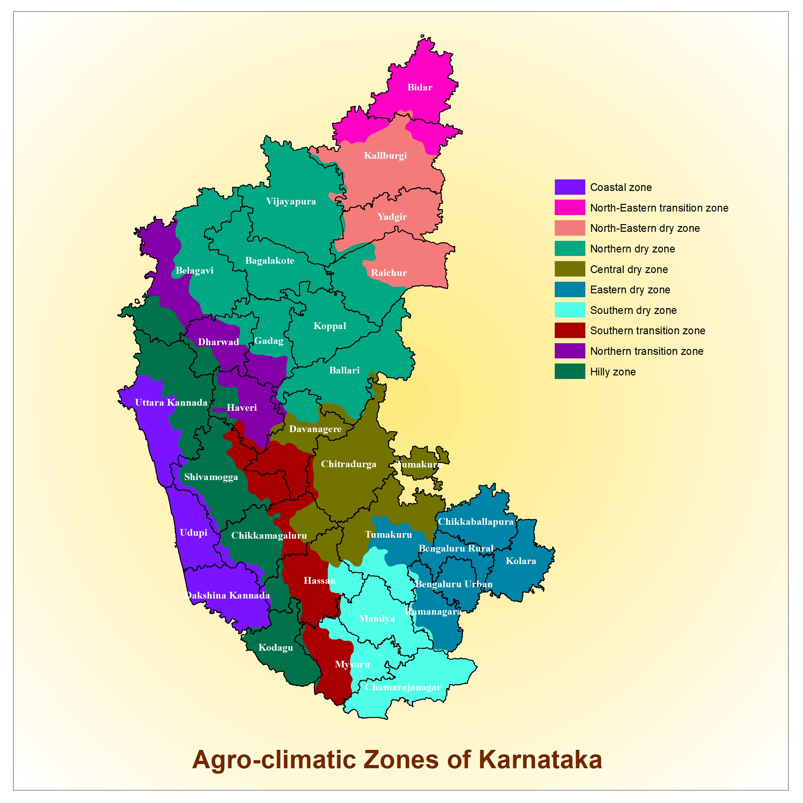

Select The Zones
North-Eastern Transition Zone
North-Eastern Dry Zone
Northern Dry Zone
Northern Transitation Zone
Hilly Zone
Central Dry Zone
Costal Zone
Southern dry Zone
Eastern Dry Zone

North-Eastern Transition Zone
1.Bidar
2.Some Part Of Kallburi.
North-Eastern Dry Zone
1.Kallburi 2.Yadgir 3.Raichur.
Northern Dry Zone
Vijayapura 2.Banglakote 3.Belagavi 4.Gadag 5.Koppal 6.Ballari
7.Some Part Of Dharwad And Kallburgi And Davanagere.
Northern Transitation Zone
1.Haveri
2.Some Part Of Belagavi And Dharwad
Hilly Zone
1.Shivamogga 2.Kodagu 3.Chikkamagaluru 4.Uttara Kannadu
5.Some Part Of 1.Hassan 2.Mysuru 3.Haveri 4.Dharwad 5.Belagavi
Central Dry Zone
1.Chitradurga 2.Tumakuru
3.Some Part Of 1.Ballari 2.Chikkamagaluru 3.Hassan 4.Davanagere.
Costal Zone
1.Uttara Kannadu 2.Udupi 3.Dakshina Kannada
4.Some Part Of 1.Hassan 2.Chikkamagaluru 3.Shivamogga
Southern dry Zone
1.Mandya 2.Mysuru 3.Chamarajanagar 4.Tumakuru 5.Hassan
6.Some Parts Of 1.Ramanagara 2.Bengaluru Urban
Eastern Dry Zone
1.Chikkaballapura 2.Bengaluru Rural 3.Bengaluru Urban 4.Kolara 5.Ramanagara
6.Some Part Of Tumakuru